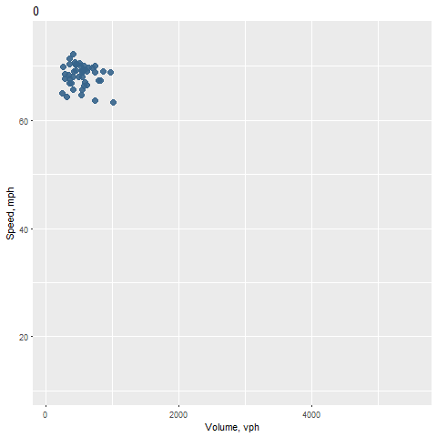

Used gganimate package to animate a traffic speed-flow diagram for I-5 northbound traffic throughout the day of the August 21, 2017 solar eclipse. Each frame in the plot shows observed 5-minute traffic data in a given hour of the day. The animation was used for exploratory analysis and shows that congestion formed just after the totality period (~10:00 a.m.) and lasting through the evening.
Also used ggplot to visually compare traffic data from the Monday of the solar eclipse against a typical day (in this example, the previous 10 Mondays).